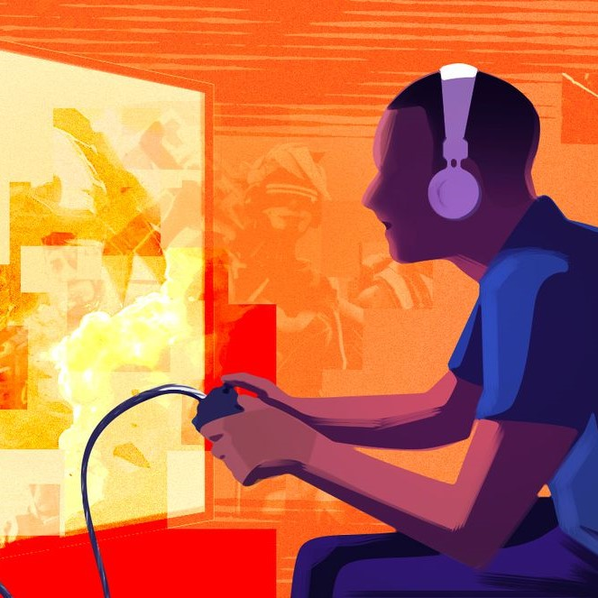

Video games are universally played and are a huge past time for many persons of different age groups. Below we will explore some of the arguments of whether video games are good or bad on indivduals in society.
Improves coordination
Improves problem solving skills
Enhances multitasking skills
Improves attention and concentration
May decrease one's ability to concentrate
Video games can become addictive
Video games can increase depression and anxiety
Video games can make people more violent